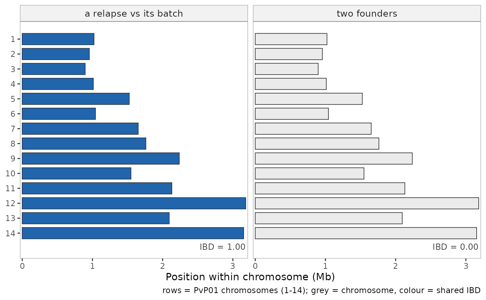
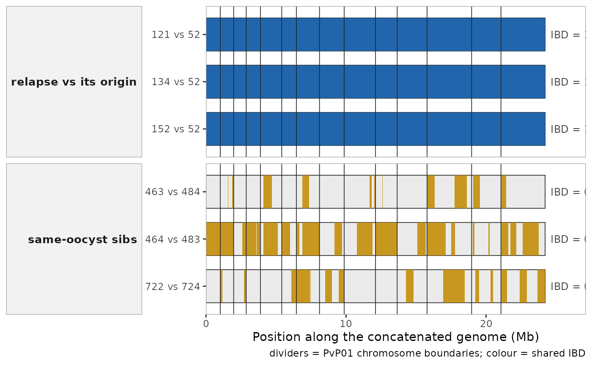

Paints the genome for each pair and colours the stretches shared identical by descent, so you can see why a pair's IBD value is what it is: a clonal pair (or a relapse against its origin) is shared end to end, same-oocyst siblings show a recombination mosaic, and unrelated genomes share nothing.
Usage
plot_ibd_pair(
run,
ids_a,
ids_b,
labels = NULL,
group = NULL,
min_span = 1000,
layout = c("chromosome", "concatenated"),
fill = "#2166ac"
)Arguments
- run
a run: a
vivax_run(fromrun_sim()orload_run()) or the path of a run directory.- ids_a, ids_b
equal-length vectors of pedigree ids, compared pairwise.
- labels
optional labels, one per pair (defaults to
a vs b). A pair with a genome the tree sequence lacks is drawn empty, its IBD shown asNA.- group
optional, one value per pair: pairs with the same value are drawn in one panel, the panels in the order the values first appear, or in the order of the levels of a factor.
- min_span
detection floor in bp, passed to
ibd_segments().- layout
"chromosome"(one bar per chromosome) or"concatenated".- fill
colour for the shared (IBD) blocks. With
group, one colour for every group, or one for each group, in group order or named by group; left out, each group gets its own.
Details
layout = "chromosome" (the default) draws the 14 PvP01 chromosomes as separate bars with
each pair in its own facet – the conventional karyotype view, and the one that shows
whether shared blocks respect chromosome boundaries. layout = "concatenated" draws the
single linkage group the model actually simulates, with chromosome dividers marked.
group sets kinds of pair side by side, such as relapses against their origin, siblings and
unrelated pairs: the pairs of a group are drawn in one panel under its name, one row per pair
from the top in the order given, and each group's shared blocks take a colour of their own. In
the chromosome layout each panel then has a column per chromosome, as wide as the chromosome is
long, and each row's label gives the pair's IBD.
Python
The IBD and ARG functions read a run's tree sequence with Python's tskit, through the
reticulate package. Either of two routes works. Automatic: with no Python chosen, reticulate
sets up its own environment with tskit (>= 1.0) and numpy the first time one of these
functions runs; this needs internet once. Your own Python: set RETICULATE_PYTHON to a
Python that has those modules (in ~/.Renviron to keep it) before the first such call of a
session. A function that cannot reach them stops with an error of class
malariafwd_no_python that says what to do, and check_setup() reports what is found.
Examples
run <- example_run()
ev <- load_events(run)
rel <- ev[event_type == "hypnozoite_activation" & parent1_pedigree_id != -1][1]
founders <- ev[event_type == "vh_inoculation_seed"]$pedigree_id[1:2]
plot_ibd_pair(run, c(rel$pedigree_id, founders[1]), c(rel$parent1_pedigree_id, founders[2]),
labels = c("a relapse vs its batch", "two founders"))

# three pairs of each kind, a panel and a colour each
tp <- ibd_truth_pairs(run)
tp <- tp[cls %in% c("relapse vs its origin", "same-oocyst sibs"), head(.SD, 3), by = cls]
plot_ibd_pair(run, tp$a, tp$b, group = tp$cls, layout = "concatenated")
